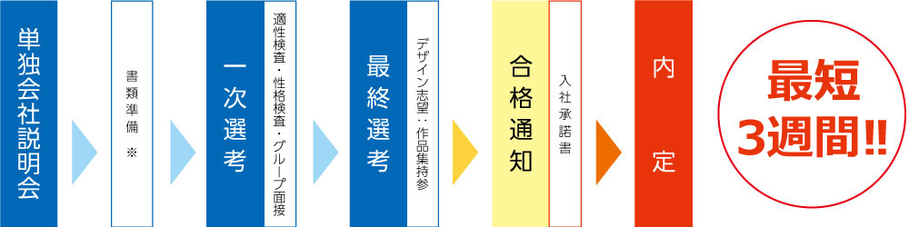

新卒募集要項
募集職種
総合職
システムエンジニア／システム運用／WEBデザイナー／DTPオペレーター・デザイナー／映像編集／システム営業／パブリッシング営業／経理・人事・総務／eコマース対応
専門職
・システムエンジニア／システム運用／eコマース対応
・WEBデザイナー／DTPオペレーター・デザイナー／映像編集
・システム営業／パブリッシング営業／経理・人事・総務
募集人数
60名程度
募集学科
全学部全学科
2020年度3月以降に卒業(修了)した方
※大学院生も積極的に採用しています
業務内容
システムエンジニア
グループ全社における、コンピュータシステムの企画・開発
お取引先様への流通BMSパッケージソフトの開発、クラウドサービスの提供、栽培管理システムの提供、コンピュータシステムの企画・開発
システム運用
グループ会社における、コンピュータシステムの運用・保守
お取引先様への流通BMSパッケージソフト、クラウドサービス、栽培管理システム、コンピュータシステムの運用・保守
WEBデザイナー
ホームセンターショッピングサイト（KOMERI.COM、旬や米利）の制作
ホームページ・スマホアプリおよび、インターネット全般に関するコンテンツ企画・制作
DTPオペレーター・デザイナー
グループ全社および、お取引先様への広告物、広報誌、商品パッケージデザイン、POPの制作・制作進行管理全般
映像編集
グループ会社および、お取引先様へのプロモーションビデオ・DVD編集制作、インターネット配信用映像制作
システム営業
お取引先様へのシステム提案・営業
パブリッシング営業
グループ全社およびお取引先様への広告物、広報誌、商品パッケージデザイン、POPの提案営業
紙の調達から、印刷、チラシ折込みを手配する調達業務
経理・人事・総務
会計・決算対応、採用・教育、勤怠・給与、労務管理、安全衛生、コンプライアンス対応
eコマース対応
ホームセンターショッピングサイト（KOMERI.COM、旬や米利）のシステム企画開発及びコンテンツ制作
選考方法
グループ面接、適性検査、性格検査
提出書類
履歴書、成績証明書、卒業見込証明書、健康診断書
採用実績校
大学院
新潟大学・長岡技術科学大学
大学
会津大学・亜細亜大学・岩手県立大学・奥羽大学・神奈川大学・金沢学院大学・金沢工業大学・京都文教大学・共立女子大学・国学院大学・駒澤大学・城西大学・上智大学・成安造形大学・専修大学・崇城大学・大正大学・大東文化大学・玉川大学・千葉工業大学・千葉商科大学・千葉大学・中央大学・筑波大学・帝京科学大学（山梨）・帝京大学・帝京平成大学・東海大学・東京経済大学・東京工科大学・東京工業大学・東京工芸大学・東京造形大学・東京電機大学・東京農業大学・東京福祉大学・東京理科大学・同志社大学・東北芸術工科大学・東北大学・東洋大学・富山大学・長岡技術科学大学・長岡造形大学・長岡大学・新潟大学・新潟医療福祉大学・新潟経営大学・新潟県立大学・新潟工科大学・新潟国際情報大学・新潟青陵大学・新潟薬科大学・日本大学・日本工業大学・八戸工業大学・弘前大学・福井県立大学・福島大学・文教大学・法政大学・北陸大学・北陸職業能力開発大学校（応用課程）・北海道情報大学・北海道大学・三重大学・明治大学・山形大学・立命館大学 等
専門学校
エプソン情報科学専門学校・大阪モード学園・大原情報ビジネス専門学校・大原簿記公務員専門学校新潟校・國學院大學栃木短期大学・国際映像メディア専門学校・国際外語・観光・エアライン専門学校・国際ペットワールド専門学校・東京ゲームデザイナー学院・専門学校東京テクニカルカレッジ・東京デザイナー学院・専門学校東京ビジュアルアーツ・東洋美術学校・長岡工業高等専門学校・新潟高度情報専門学校・新潟公務員法律専門学校・新潟コンピュータ専門学校・新潟情報専門学校・新潟デザイン専門学校・新潟ビジネス専門学校・新潟理容美容専門学校・日本アニメ・マンガ専門学校・日本工学院専門学校・日本自然環境専門学校・専門学校日本デザイナー学院・バンタンデザイン研究所・北陸職業能力開発大学校附属新潟職業能力開発短期大学校・横浜デジタルアーツ専門学校 等
初任給
総合社員
・院了 / 225,000円
・大学卒 / 208,000円
・短大・専門卒 / 187,000円
地域限定社員（新潟）総合職
・院了 / 215,000円
・大学卒 / 200,000円
・短大・専門卒 / 180,000円
地域限定社員（新潟）専門職
・院了 / 207,000円
・大学卒 / 198,000円
・短大・専門卒 / 175,000円
地域限定社員（東京）
・院了 / 219,000円
・大学卒 / 203,000円
・短大・専門卒 / 183,000円
ホーム社員（転勤なし）
・高卒以上 / 168,000円～
諸手当
皆勤手当、通勤手当（上限20,830円）、超過勤務手当、住宅補給金
昇給
年1回（4月）
賞与
年2回（7月・12月）
勤務地
総合社員
新潟市（本社・米山情報センター）、東京（東京情報センター）、海外事務所
地域限定社員（新潟）
新潟市（本社・米山情報センター）
地域限定社員（東京）
東京（東京情報センター）
※地域限定社員（東京）は、新潟で10日間の研修を受けて頂きます。
ホーム社員（転勤なし）
新潟市（本社/米山情報センター）
※自宅から勤務地まで30Km圏内の方
東京（東京情報センター）
勤務時間
8：45～18：00 （うち休憩90分）
※毎週水曜日を定時退社日として設定
※オペレーション当番(新潟勤務の場合)／遅番12：45～22：00（入社後、3年間）
※各グループ当番／早番6：30～15：45、7：45～17：00 遅番11：45～21：00
休日休暇
週休2日制（年間111日）、年次有給休暇、慶弔休暇、特別休暇 等
※年に2回、4連休以上の連続休暇の取得を推奨
福利厚生
各種社会保険完備、厚生年金、財形貯蓄、コメリ社員持ち株会 等
教育制度
社内研修
＜定期入社研修＞
学生から社会人としての心構えを学び、流通業の基礎を習得（コメリ入社研修へ参加）
その後、ビット・エイ各部署の業務内容を習得
流通センターでの商品梱包や検収作業などの実習により、約1,200店舗を網羅する物流システムを習得
＜店舗研修/センター研修＞
コメリ店舗での実習により、約1,200店舗を網羅する物流システムを習得
＜プログラミング研修＞
基本的なプログラミング研修からシステム開発を行う上での手順を習得
※地域限定社員（東京）は、新潟で10日間の研修を受けて頂きます。
社外研修
＜中小企業大学校、新潟産業創造機構(NICO)、新潟市ソフトウェア産業協議会 etc...＞
外部研修機関を利用して新技術、言語力を学び、専門的な知識を習得
採用フロー

一次選考では適性検査・性格検査・グループ面接を行ないます。
デザイン志望の方は、最終選考で作品集を持参していただきます。
エントリー
会社説明会・一次選考のご予約は、下記からお願いします。
なお、満席で予約が出来ない場合、直接担当者へご連絡ください。
≫エントリーはこちら
≫マイナビ2024
≫リクナビ2024
≫にいがた就職応援団ナビ2024
新潟県へのU・Iターンをお考えの学生の皆さんへ
新潟県では県外在住の学生が就職活動の為に住所地と新潟県内を移動する場合の交通費及び宿泊費を補助する事業があります。
ぜひ活用してビット・エイの会社説明会にもお越し下さい。
詳しくはコチラ